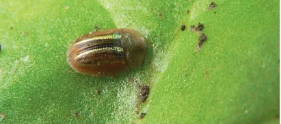
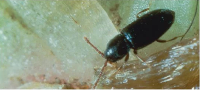
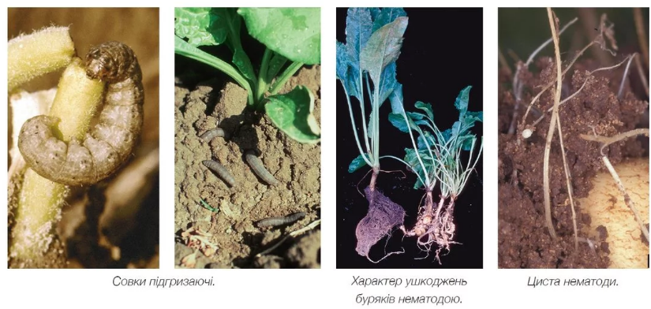

Класифікація шкідників та загальний характер пошкоджень ними цукрових буряків
Серед шкідників цукрових буряків на сьогодні виділяють дві основні групи: шкідники сходів та шкідники післясходового періоду вегетації цукрових буряків. Умовний термін «сходи цукрових буряків» обмежується періодом вегетації рослин від початку їх появи на поверхні ґрунту і до линяння кореня, що настає у фазу 2-ї пари і завершується у фазі 3-ї пари справжніх листків (Саблук В. Т. та ін. Шкідники та хвороби цукрових буряків, 2005). У цей період росту і розвитку рослини культури найбільш уразливі й доступні для багатьох видів фітофагів, які за надмірного розмноження можуть завдавати їм значної шкоди. В Україні сходи цукрових буряків пошкоджують близько 40 фітофагів, але істотних збитків посівам цієї культури, звичайно, завдає значно менша кількість шкідливих комах. Серед шкідників сходів виділяють кілька видів довгоносиків, бурякові блішки, щитоноски, бурякову крихітку, личинки декількох видів коваликів, жуків та личинки піщаного мідляка, мертвоїдів, личинки пластинчастовусих жуків тощо. З-поміж шкідників післясходового періоду вегетації цукрових буряків (після линяння кореня) виділяють декілька спеціалізованих видів: попелиці (листкова та коренева), клопи, цикадкові, бурякова мінуюча міль, мухи та деякі інші, — а також шкідників з родини лускокрилих (підгризаючі та листогризучі совки, вогнівки), бурякову нематоду, окремих представників ряду прямокрилих, мурашок тощо.
Коротко розглянемо загальну біологію звичайних представників умовно виділених вище груп та характер спричинених ними пошкоджень.
ДОВГОНОСИК ЗВИЧАЙНИЙ БУРЯКОВИЙ Bothynoderes punctiventris Germ Звичайний буряковий довгоносик дає одне покоління в рік. Імаго зимує в ґрунті на глибині 10–40 см на минулорічних рештках цукрового буряку. Яйця відкладає в ґрунті на глибині 0,3–0,9 см біля рослин культури. Жуки пошкоджують сходи, а саме: з’їдають сім’ядолі, надземну частину підсім’ядольного коліна й перші пари листків. Дуже пошкоджені рослини гинуть. Личинки об’їдають корінці, а також вигризають м’якуш коренеплодів, від чого рослини в’януть і засихають навіть при достатній вологості ґрунту. Шкодять жуки у квітні — травні, личинки — у травні — серпні (Саблук В. Т. та ін. Шкідники та хвороби цукрових буряків, 2005).
ДОВГОНОСИК СІРИЙ БУРЯКОВИЙTanymecus palliatus F.Сірий довгоносик має подібний до звичайного життєвий цикл, однак імаго виходять з ґрунту на 10–15 днів пізніше, ніж у звичайних бурякових довгоносиків. Вихід імаго навесні починається після прогріву ґрунту на глибині до 20 см до 4–4,8 °С й займає дуже розтягнутий в часі період. Жуки об’їдають на сходах вилочку та перші листки, дуже часто знищують проростки, які ще не з’явилися на поверхні ґрунту. Личинки живляться коренями осоту, березки, рідше інших рослин. Серед інших видів бурякових довгоносиків в Україні також відомі:
- чорний буряковий довгоносик (Psalidium maxillosum F.);
- східний буряковий довгоносик (Bothynoderes foveicollis Gebl.);
- смугастий буряковий довгоносик (Chromoderus fasciatus Moll.);
- білуватий буряковий довгоносик (Chromoderus declivis Ol.).
БУРЯКОВА ТА ЛОБОДОВА ЩИТОНОСКИ
Імаго зимує в підстилці лісосмуг, по краях полів. Яйця відкладають на верхній та нижній боки листків культури. Жуки згризають м’якуш листків зверху, а личинки — знизу, залишаючи епідерму і скелетні жилки. Після підсихання шкірочка розривається і в листку утворюються отвори різного розміру та форми. Основною кормовою рослиною для жуків і личинок щитоноски бурякової є лобода біла, з якої жуки і личинки переселяються на буряки, а для щитоноски лободової — буряки й рідше лобода.
 Heterodera shahtii та ін.
Вирощування цукрових буряків потребує обов’язкового дотримання всіх елементів технології. Водночас ця культура дуже вибаглива до сівозміни, позаяк термін повернення на попереднє місце має важливе значення для успішного її вирощування. Порушення науково обґрунтованого чергування цукрових буряків у сівозміні, зростання частки олійних культур можуть призвести до суттєвого зменшення продуктивності цукрових коренів та пошкодження їх хворобами. Нинішнє зосередження посівів цукрових буряків навколо цукрових заводів, хаотичне розміщення їх у сівозміні, недотримання технологій вирощування призвели до зростання рівня пошкоджуваності спеціалізованими шкідниками і хворобами. Так, велике занепокоєння викликає випадання рослин цукрових буряків, спричинене поширенням на бурякових плантаціях різних нематодозів.
Цукрові буряки уражуються значною кількістю видів нематод, серед яких найнебезпечніші: бурякова (Heterodera schachtii Schmidt), стеблова (Ditylenchus dipsaci Kuchn.), галові (Meloidogyne spp.) та лонгідоруси (Longidorusspp.). Втрати врожаю солодких коренів за високої щільності популяції бурякової нематоди можуть сягати 65 % і більше. Шкідливість інших видів фітопаразитичних нематод — пратиленхів (Pratylenchus spp.), гелікотиленхів (Helicotylenchus spp.), паратиленхів (Paratylenchus spp.) — дещо менша, однак їхнє комплексне живлення на коренях пригнічує розвиток рослин і призводить до втрати 37 % біомаси цієї культури. Одна з найпроблематичніших хвороб на посівах цукрових буряків — гетеродероз, збудником якого є бурякова цистоутворююча нематода (Heterodera schachtii Schmidt). Вона поширена в Європі від Іспанії до Фінляндії та від Ірландії до Болгарії. Зустрічається також у Туреччині, Ізраїлі, в східних і західних штатах США, Канаді, Австралії та Південній Африці (в понад 40 країнах світу). В Україні поширена в усіх бурякосійних областях. Високе насичення гетеродерозом відмічено в господар- ствах, що належать цукровим заводам та дрібним фермерським господарствам. Бурякова нематода за вегетаційний період розвивається в двох поколіннях і здатна паразитувати на рослинах із 25 сімей класу дводольних. Крім цукрових буряків, вона також уражує ріпак, редьку, гірчицю, капусту, а серед бур’янів кращими господарями є представники сімейств лободових і хрестоцвітих. Самець дуже маленький (0,8–1 мм), прозорий; спереду має горбик у вигляді голочки (шипик), у центрі якої міститься ротовий отвір. Самка лимоноподібна, завдовжки 0,8–1,3 мм, спочатку жовтувато-білого, а потім бурого кольору; шипики дещо менші, навколо рота (за збільшеного розгляду) часто можна помітити скупчення бурякового соку. Самки містяться під шкіркою кореня, а коли вона лопається, вони переходять на поверхню буряка, де їх знаходять самці, які живуть у ґрунті. Коли починають розвиватися численні яйця, то всі внутрішні органи самиць атрофуються, і їхнє тіло буквально перетворюється на «мішок», наповнений яйцями і личинками. Видовжені тонкі личинки розвиваються всередині тіла матері, а, покинувши його, живуть деякий час вільно, в ґрунті. Розповзаючись ґрунтовою поверхнею, личинки пробурюють корінець уподобаної рослини, проколюючи шипиком його шкірку, і проникають усередину, живлячись соками рослини, потім стають нерухомими, линяють і набувають пляшкоподібної форми. Через кілька днів личинки перетворюються на дорослих самців і самок. Самка відкладає не всі яйця: частина їх залишається в тілі матері, потім її кутикула утворює цисту, де яйця можуть зберігати свою життєздатність до шести років. Імовірно, розвивається від чотирьох до семи поколінь на рік, причому самки останнього покоління (наприкінці літа) оточують себе оболонкою, утворюючи цисту, та зимують у ґрунті.
Поріг шкодочинності нематод — це наявність 5–7 цист/см3 ґрунту. За результатами багаторічних обстежень встановлено, що переважна більшість бурякосійних господарств має середній рівень зараження (близько 600 личинок + яєць в 100 см3 ґрунту), що може спричинити 30 % втрат урожаю. В окремих господарствах чисельність нематоди сягає надзвичайно високого рівня (до 7000 личинок + яєць у 100 см3 ґрунту) (Іоніцой Ю., Ременюк Ю. Пропозиція, 2012). Фіксували навіть повну загибель коренеплодів цукрових буряків. Найчисельніші вогнища гетеродерозу виявляли в Черкаській, Вінницькій, Хмельницькій, Сумській, Харківській, Чернігівській областях. Відсутність знань симптоматики гетеродерозу і методів його визначення унеможливлює встановлення причини цієї хвороби, що за ознаками дуже схожа з грибними або вірусними захворюваннями. Водночас зовнішні симптоми ураження цукрових буряків нематодою виразно проявляються на фоні високого рівня ґрунтового зараження (понад 300 личинок + яєць у 100 см3 ґрунту), коли переважна більшість рослин відстає в рості й розвитку, бурякове листя стає блідо-зеленим. Уражені рослини зазвичай розташовані осередками, в результаті чого на полі утворюються лисини (в кінці червня — на початку липня). Виснажені й прив’ялі рослини частіше і сильніше уражуються паразитичними грибами. Через півтора-два місяці вегетації в осередках з інтенсивним зараженням у нижній частині та з боків зростаючого коренеплоду формується характерна за ураження нематодою «борода» з численних бічних корінців, що утворюються в місці харчування нематод. На бічних корінцях також у великій кількості сидять молоді білі самки і зрілі коричневі цисти. Тільки у посушливі періоди і в жаркі години дня у вогнищах зараження спостерігається в’янення рослин, яке до ранку минає. Найсильніший прояв захворювання — повне випадання рослин. За низького (1–100 личинок + яєць у 100 см3 ґрунту) і середнього (101–300 личинок + яєць у 100 см3 ґрунту) рівнів її чисельності хворі рослини зовні не відрізняються від здорових. У посівах цукрових буряків шкідливість бурякової нематоди, насамперед, залежить від рівня її допосівної наявності в ґрунті. Встановлено, що в умовах Лісостепу зниження врожайності цукрових буряків починається за початкової зараженості ґрунту нематодою на рівні 160–180 личинок + яєць у 100 см3 ґрунту. Економічний поріг шкодочинності, за якого доцільно застосовувати хімічні та біологічні засоби захисту, становить 200 личинок + яєць у 100 см3 ґрунту. Основна діагностика виявлення нематоди ґрунтується на відбиранні проб на полях, де виявлено зовнішні ознаки ураження чи прогнозується таке ураження. Однак її кількість залежить від тривалості вирощування культур, які пошкоджуються, на одному полі, фази розвитку рослин та погодних умов. Зразки ґрунту для аналізу на вміст нематоди відбирають із глибини 0–30 см, але тут міститься приблизно 35 % нематод, а інші — в значно глибших шарах ґрунту (близько 50 % — у шарі 30–60 см; 15 % — ще глибше). Діагностика нематод ускладнюється їхніми мікроскопічними розмірами та швидким розмноженням. На жаль, на світовому ринку засобів захисту рослин на сьогодні існує не так багато нематицидів, які можуть якісно і не дуже дорого поборотися з проблемою розвитку нематод на цукрових буряках. Мова може йти лише про селекцію на стійкість. У компанії «Сингента» з цього року з‘явився свій нематодостійкий гібрид — Аттак.